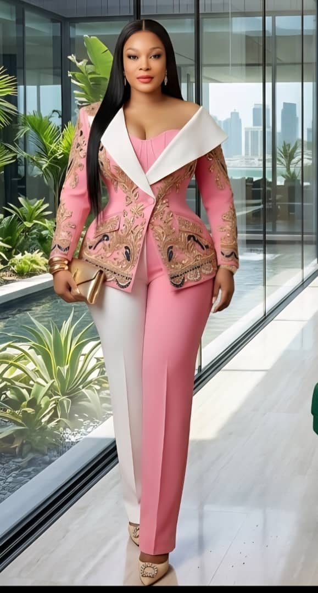
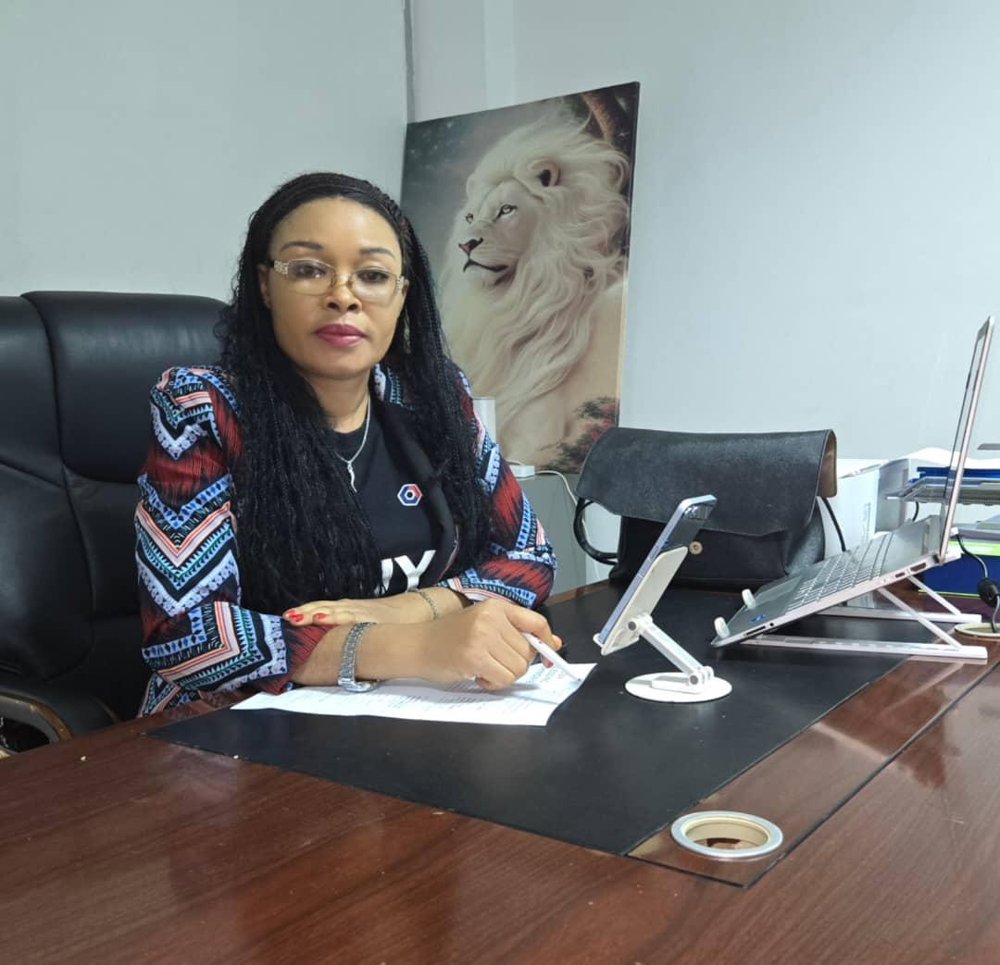

Strategic Human Resource solutions for organizations of all sizes.
Recruiting competent professionals and executives for organizational success.
Leadership, supervisory, customer service, sales, and HR training programmes.
Designing and implementing performance management systems that improve productivity.
Developing HR manuals, policies, procedures, and employee handbooks.
Supporting organizations in building effective structures, culture, and people systems.

